Capítulo 10. Desdobramento e mobilidade
Após o projeto, implementação e validação de um sistema de software, ele está pronto para operação. Isso geralmente exige que os componentes e conectores do sistema sejam primeiro distribuídos para os processadores de hardware "alvo". Um sistema de software não pode cumprir seu propósito até ser implantado, ou seja, até que seus módulos executáveis sejam fisicamente colocados nos dispositivos de hardware nos quais devem rodar. O resultado da atividade de colocar os componentes de software de um sistema em seus hosts de hardware é a implantação da arquitetura do sistema.
Uma vez que o sistema está em operação, é possível, e frequentemente necessário, mudar a localização física de seus hosts de hardware. Por exemplo, laptops, assistentes digitais pessoais (PDAs), telefones celulares, rádios controlados por software e computadores embutidos em um veículo, todos se movem regularmente enquanto permanecem conectados. Mais desafiador, mais interessante para um engenheiro de software (e até mesmo para um usuário) e mais pertinente para este livro é a realocação ou migração de um componente ou conector de software de um host de hardware para outro. Isso pode precisar ser feito para melhorar o desempenho do sistema, talvez colocando um componente de processamento com os dados necessários, reduzir a carga computacional sobre um determinado host ou para alcançar alguma outra propriedade. Realocar módulos de software dessa forma altera a visão de implantação da arquitetura do sistema de software durante o tempo de execução do sistema, e é chamado de migração ou reimplantação. A migração (ou reimplantação) do sistema em tempo de execução é, portanto, um tipo de mobilidade de um sistema de software.
Deve-se notar que alterar a implantação de um sistema enquanto ele está em funcionamento implica um conjunto de preocupações que os engenheiros enfrentam durante a implantação inicial, incluindo as seguintes.
Fundamentalmente, o papel do hardware no contexto de implantação e mobilidade é suportar a arquitetura de software de um sistema, incluindo a funcionalidade incorporada nos componentes de processamento, as informações trocadas por meio dos componentes de dados, as interações facilitadas pelos conectores e a estrutura geral definida pela configuração. A configuração de hardware pode, por sua vez, também apresentar restrições que devem ser suportadas pela arquitetura do software: a escolha dos pontos de distribuição induz certas decisões arquitetônicas. A visão de implantação da arquitetura de um sistema de software pode ser crítica para avaliar se o sistema será capaz de satisfazer seus requisitos. Por exemplo, colocar muitos componentes grandes em um dispositivo pequeno com memória e poder de CPU limitados, ou transferir grandes volumes de dados por um link de rede com baixa largura de banda impactará negativamente o sistema, assim como implementar incorretamente sua funcionalidade.
Para ilustrar essas questões, considere a configuração dos dispositivos de hardware mostrada na Figura 10-1. Essa configuração é típica daquelas usadas em sistemas de redes de sensores sem fio, encontradas em muitos edifícios comerciais, usinas de energia e sistemas de transporte. Os dispositivos sensores possuem softwares que podem ajudar a determinar as condições do ambiente externo, como movimento, vibração, fogo e umidade. Sensores normalmente têm recursos altamente limitados e só conseguem realizar quantidades mínimas de computação e armazenamento de dados. Os dispositivos gateway agregam, processam e possivelmente compartilham essas informações. Eles o repassam para os hubs, que podem rodar softwares capazes de tomar decisões apropriadas em caso de certos eventos ou mudanças no status do sistema. Por exemplo, se um gateway falhar, um hub pode instruir outro gateway a assumir o gerenciamento dos sensores "órfãos"; da mesma forma, se múltiplos sensores reportarem eventos de um determinado tipo (como excesso de umidade), o hub pode decidir que é apropriado soar um alarme. Tanto os gateways quanto os hubs têm capacidades significativamente maiores que os sensores, e podem ser capazes de realizar grandes quantidades de cálculo e/ou armazenar grandes quantidades de dados. Por fim, os humanos podem observar o funcionamento do sistema por meio de PDAs, que se comunicam com os hubs. PDAs geralmente são mais espaçosas que sensores, mas não tão espaçosas quanto os hubs ou gateways. Os quatro tipos de dispositivos podem rodar sistemas operacionais diferentes e outros softwares em nível de sistema, exigir diferentes dialetos de linguagens de programação e suportar diferentes protocolos de rede.
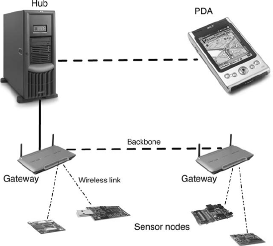
Figura 10-1. Um sistema de rede de sensores sem fio composto por dispositivos de hardware de vários tipos, no qual um sistema de software é implantado.
Engenheiros de software devem levar em conta informações como as acima ao decidir como implantar o sistema de software nos hosts de hardware necessários. Além disso, essas informações impactarão diretamente as opções que um engenheiro tem para reimplantar os componentes do sistema — e possivelmente conectores — durante o tempo de execução. As idiossincrasias de uma determinada plataforma servirão, portanto, como restrições de implantação e mobilidade de software.
Além de considerar as características dos dispositivos de hardware envolvidos, certos requisitos em nível de aplicação podem ter um impacto significativo na implantação e mobilidade da arquitetura de software em questão. Por exemplo, o tempo máximo permitido de ida e volta entre o relato de um evento por um sensor e o reconhecimento de que o evento foi recebido por um componente de processamento a montante pode afetar onde certos componentes de processamento e dados são colocados no sistema, como no gateway ou no hub. Esse requisito também pode impactar o fluxo de informações, por exemplo, se e quando os usuários humanos precisam ser informados versus quando o próprio sistema de software pode tomar uma decisão.
Como outro exemplo ilustrativo, considere um sistema de resposta a emergências (ERS), cuja captura de tela é mostrada na Figura 10-2. Os dispositivos desse sistema são um pouco mais homogêneos do que no exemplo anterior: há um pequeno número de laptops potentes, que supervisionam a operação geral. Os laptops interagem principalmente com um conjunto de PDAs de alto padrão que são responsáveis por segmentos específicos da operação; por sua vez, cada um desses PDAs interage com um grande número de PDAs de nível mais básico, que são usados por indivíduos que participam como socorristas de primeira linha. Mesmo rodando sistemas operacionais diferentes, cada tipo de dispositivo é capaz de exibir uma interface de usuário, rodar Java e se comunicar via TCP/IP. Portanto, além das capacidades computacionais e de armazenamento dos diferentes dispositivos, o número de restrições que precisam ser consideradas durante a implantação e reimplantação de um sistema de software é menor do que no caso do sistema de rede de sensores sem fio da Figura 10-1.
Neste capítulo, estudamos o impacto de um foco explícito na arquitetura de software na implantação e mobilidade do sistema. Por outro lado, também estudaremos o impacto da implantação e mobilidade na arquitetura de software. O leitor deve notar que a implantação pode ser vista como um caso especial de mobilidade, ou seja, como a mobilidade dos módulos de software antes do tempo de execução do sistema. Os dois conceitos são, portanto, intimamente relacionados e muitos dos desafios, ramificações, técnicas e ferramentas resultantes são semelhantes.
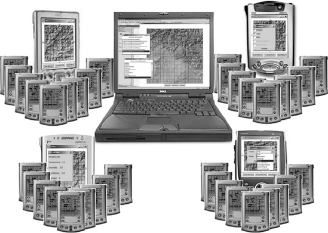
Figura 10-2. Um exemplo da família dos sistemas de resposta a emergências (ERS), que ajudam no envio e organização de equipes humanas em casos de desastres naturais, operações de busca e salvamento e crises militares (© IEEE 2005).
O objetivo deste capítulo é definir e, quando necessário, esclarecer o papel da arquitetura de software na implantação e mobilidade, discutir diferentes abordagens para implantação e mobilidade de software, e apresentar um conjunto de técnicas de implantação e mobilidade que estão à disposição do engenheiro. Ilustramos os pontos principais da discussão por meio de exemplos de soluções existentes. Embora a implantação de software e a mobilidade sejam duas áreas importantes e em crescimento, nosso foco aqui é especificamente em seus aspectos arquitetonicamente relevantes. Uma lista anotada de referências será apresentada ao final do capítulo para um tratamento mais amplo das duas áreas.
Resumo deCapítulo 10
VISÃO GERAL DOS DESAFIOS DE IMPLANTAÇÃO E MOBILIDADE
Sistemas modernos de software podem apresentar diversos desafios de implantação e mobilidade. Vários desses estão descritos abaixo.
Tradicionalmente, o problema da mobilidade, e especialmente a implantação inicial do sistema, é tratado de maneira relativamente uniforme, e nem sempre reflete os cenários acima. Por exemplo, se um usuário de PC com Windows quiser atualizar um sistema operacional ou aplicativo em seu PC, ou instalar um patch que elimine um problema existente, ele ou obterá um CD-ROM com o software necessário ou acessará um site e baixe o software; o usuário então terá que desligar todos os aplicativos rodando no PC para completar o procedimento. Enquanto o usuário do PC controla o processo de implantação, essa abordagem de usuário humano no loop baseia-se em certas suposições, como o fato de que o ambiente operacional de um computador é um dos poucos ambientes rigidamente controlados suportados pelo provedor de novas funcionalidades. Independentemente da habilidade técnica do usuário de PC, ele geralmente terá pouca compreensão das mudanças feitas no código rodando no PC. Em outras palavras, a pré-condição para, por exemplo, instalar um novo componente de corretor ortográfico em um processador de texto é que o usuário confie plenamente no desenvolvedor do componente, espere que o novo software funcione corretamente, que elimine quaisquer problemas que o usuário possa ter tido com o corretor ortográfico anterior e que não introduza novos bugs. Como todos sabemos pela experiência, às vezes esses patches resolvem os problemas, às vezes não, mas eventualmente a maioria dos usuários de PC chega ao ponto em que o desempenho do computador piorou tanto que a única solução verdadeira é "reinstalar o PC completamente". [12]
A situação é ainda mais extrema se um dispositivo de mercadoria, como um automóvel, telefone celular ou uma caixa de TV a cabo "inteligente", começar a apresentar problemas de comportamento. Nesses casos, é provável que o proprietário ou usuário precise contar com um profissional treinado para o remédio. Isso geralmente exige abrir mão do controle do dispositivo por um período de tempo, durante o qual todo o software rodando no dispositivo será reimplantado e reinstalado do zero ou simplesmente substituído junto com o processador em que está rodando. No processo, qualquer dúvida que o proprietário ou usuário possa ter sobre o que realmente está acontecendo com o dispositivo quase certamente receberá respostas eufemísticas sem resposta, pois até mesmo os profissionais treinados não entendem as causas subjacentes, além do fato de que, com o tempo, algo no software deu errado.
Seja lá o que for esse "algo", provavelmente tem causas arquitetônicas subjacentes. Toda vez que um novo sistema de software é implantado em seus hosts de destino, sua arquitetura inicial de implantação é estabelecida. Quando esse sistema inicial é alterado — por meio de um patch de segurança, implantando um novo componente ou adicionando um novo host — sua arquitetura também muda. Se as implicações arquitetônicas dessas mudanças não forem cuidadosamente analisadas e claramente compreendidas, a arquitetura do sistema está fadada a se degradar. Eventualmente, a arquitetura se degrada a ponto de o sistema não conseguir funcionar adequadamente, exigindo uma reformulação completa, como nos cenários acima.
Embora os dois estejam relacionados, o restante do capítulo aborda separadamente o papel da arquitetura de software na implantação e na mobilidade dos sistemas de software.
ARQUITETURA DE SOFTWARE E IMPLANTAÇÃO
Implantação é o conjunto de atividades que resultam na colocação dos componentes e conectores de um determinado sistema de software em um conjunto de hosts físicos. Esse conjunto de atividades pode ocorrer tanto durante a construção do sistema, ou seja, antes do tempo de execução, quanto durante sua execução. No último caso, a implantação envolve a transferência e ativação de componentes/conectores que são adicionados ao sistema pela primeira vez — ou seja, novos elementos ou novas versões de elementos existentes. Se os elementos implantados em um determinado host já estavam rodando anteriormente em outro host do sistema, possivelmente tendo estado de execução, isso é considerado um caso de mobilidade de código e é discutido na próxima seção.
No restante desta seção, primeiro apresentamos os conceitos básicos subjacentes à implantação de software. Em seguida, elaboramos o conjunto de atividades principais de implantação com foco específico no papel da arquitetura de software nelas. Por fim, discutimos o suporte de ferramentas necessário para a implantação de software orientada por arquitetura.
Conceitos Básicos
A visão geral dos conceitos-chave que fundamentam a implantação de software, fornecida nesta seção, baseia-se em uma estrutura de caracterização de tecnologia de implantação de Antonio Carzaniga, Alfonso Fuggetta, Richard Hall, Dennis Heimbigner, André van der Hoek e Alexander Wolf (Carzaniga et al. 1998).
Um sistema de software é implantado em um ou mais dispositivos de hardware, chamados de hosts ou sites. Cada site fornece um conjunto de recursos necessários para hospedar e executar o sistema ou alguns de seus subsistemas. Os recursos incluem os diferentes elementos do seguinte.
Os recursos podem ser exclusivos (como número da porta IP, GUID) ou compartilháveis (como CPU, arquivo de dados).
Um sistema de software é composto por um conjunto específico de componentes e conectores, com interconexões cuidadosamente prescritas e interações permitidas. Podem existir múltiplas versões dos componentes e conectores, o que significa que o sistema em si também pode ter várias versões. Uma versão é definida como uma revisão ordenada no tempo, uma variante específica de plataforma ou uma variante funcional.
A implantação inicial do sistema envolve a transferência de componentes ou conectores do sistema de um ou mais hosts fonte ou produtores para um ou mais hosts de destino ou consumidores. Atividades subsequentes de implantação normalmente envolvem a introdução de novas funcionalidades (ou seja, novos componentes) ao sistema, ou a substituição de componentes ou conectores existentes por versões diferentes.
Atividades de Implantação
A implantação de software orientada por arquitetura compreende um processo que deve ser cuidadosamente planejado, modelado, analisado e, finalmente, efetivado ou executado. Discutimos essas quatro atividades com mais detalhes abaixo, focando especificamente na relação entre cada atividade e a arquitetura de software.
Planeamento
É fundamental que a implantação de um sistema de software seja cuidadosamente planejada. Muitas propriedades importantes do sistema, especialmente em um ambiente distribuído, serão afetadas pela implantação do sistema. Por exemplo, a latência do sistema na entrega de um determinado serviço pode ser melhorada se o sistema for implantado de modo que as interações mais frequentes e volumosas necessárias para esse serviço ocorram localmente ou por links de rede confiáveis e amplos.
Para qualquer sistema grande e distribuído, muitas implantações — ou seja, mapeamentos de componentes e conectores de software para hosts de hardware — serão possíveis, em princípio. Algumas dessas implantações serão mais eficazes do que outras para garantir as propriedades desejadas do sistema, como sua confiabilidade, disponibilidade, segurança e tolerância a falhas. Um sistema que atende aos seus requisitos e possui essas propriedades é considerado capaz de entregar um nível desejado de qualidade de serviço, geralmente chamado de QoS para "qualidade de serviço", aos seus usuários. Claro, para poder afirmar que o sistema entrega o QoS necessário, as diferentes dimensões de QoS devem ser mensuráveis e quantificáveis. Revisitamos essa questão na próxima seção. No restante desta seção, assumimos que as dimensões de QoS em questão são, de fato, mensuráveis e quantificáveis.
Deve-se notar que há casos em que as decisões de implantação podem ser e são tomadas com relativa facilidade — independentemente de realmente serem adequadas para o sistema em questão ou não. Um exemplo é um ambiente desktop típico, no qual um usuário humano decide o software que deseja instalar em seu computador pessoal. Outro exemplo seria um sistema implantado por uma agência espacial, composto por uma sonda interplanetária e uma estação terrestre. Nesses sistemas, normalmente é sabido a priori de que lado (voo ou solo) os diferentes componentes do sistema estarão localizados. Outro exemplo, até certo ponto, é o sistema de rede de sensores sem fio representado na Figura 10-1: Os componentes da interface gráfica implementados em Java residirão nos PDAs, enquanto os componentes computacionalmente intensivos implementados em C++ serão implantados nos hubs ou gateways (Malek et al. 2007). Embora a possível presença de múltiplos hubs e gateways, e múltiplos tipos de PDAs, ainda exija que os arquitetos e engenheiros do sistema considerem os efeitos de suas decisões de implantação dentro de cada classe de componentes (neste exemplo, componentes de interface gráfica e componentes computacionalmente intensivos, respectivamente), o número de possíveis implantações é significativamente reduzido.
O problema de implantação é substancialmente mais desafiador em um sistema como o retratado na Figura 10-2, no qual o número de hosts de hardware é significativamente maior e todos os dispositivos oferecem ambientes de execução aproximadamente semelhantes (neste caso, Java). O problema de determinar uma implantação eficaz torna-se intratável para um engenheiro humano se, além disso, múltiplas dimensões de QoS, como latência, segurança, disponibilidade e uso de energia, forem consideradas simultaneamente, levando em conta quaisquer restrições adicionais. Por exemplo, o componente X pode não ser implantado nos hosts Y e Z devido ao tamanho do componente, à incapacidade dos hosts de fornecer os recursos necessários para sua execução, a preocupações de segurança ou a outra coisa. Esse é um problema particularmente desafiador devido aos seguintes problemas.
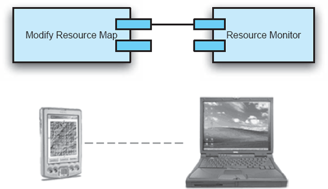
Figura 10-3. Um pequeno subconjunto da arquitetura do sistema ERS, composto por dois componentes de software e dois hosts de hardware. Os componentes são representados em UML para conveniência.
Em geral, para um sistema composto por componentes e conectores de software c que precisam ser implantados em host de hardware h, existem implantações possíveis de hc . Claramente, algumas dessas implantações podem não ser válidas devido a restrições de localização como as mencionadas acima, restrições de memória em diferentes dispositivos, considerações de largura de banda de rede ou disponibilidade de hardware e software do sistema. Isso reduzirá o espaço de possíveis implantações. Por outro lado, o usuário humano ainda precisa determinar qual implantação prefere, por quê e, nesse processo, pode ter que considerar múltiplas implantações inválidas.
Como exemplo simples, considere o seguinte cenário. Um subconjunto muito pequeno da arquitetura do sistema ERS, esboçado na Figura 10-2, é representado na Figura 10-3. Este sistema em particular contém apenas dois componentes de software e dois hosts de hardware; O conector que permite a interação entre os dois componentes foi omitido por simplicidade. Os dois componentes interagem para fornecer um serviço de recursos de agendamento, e a única propriedade (ou seja, dimensão QoS) de interesse é a latência. Este pequeno sistema possui quatro possíveis implantações:
Para um sistema tão pequeno, é, de fato, possível considerar todas as possíveis implantações e medir sua latência real. Vamos supor que as latências medidas das quatro implantações sejam as mostradas na Figura 10-4(a). Esses valores são hipotéticos, usados aqui apenas para ilustração. A partir desses dados, é fácil determinar que a primeira implantação apresentou a menor latência e, portanto, é a implantação ideal.
Vamos agora estender um pouco o exemplo e introduzir outra dimensão de QoS — durabilidade. Definimos durabilidade como o inverso da taxa de consumo de energia do sistema. Em muitos ambientes embarcados e móveis, sistemas com maiores taxas de consumo de energia ficam sem bateria mais cedo, ou seja, terão menor durabilidade. Portanto, implantações que reduzem a taxa de consumo de energia aumentarão a durabilidade do sistema.
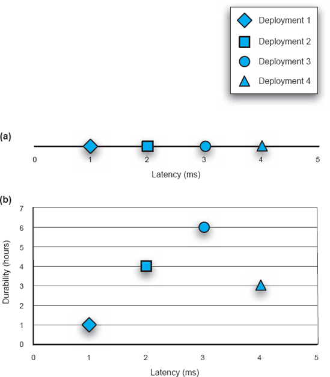
Figura 10-4. Avaliando implantações do subsistema ERS a partir da Figura 10-3. (a) Latência é a única dimensão de QoS de interesse. (b) Latência e durabilidade são as duas dimensões de QoS de interesse.
A Figura 10-4(b) mostra os valores de durabilidade (hipotéticos) representados junto com os valores de latência obtidos anteriormente. A primeira implantação ainda apresenta a menor latência, mas a terceira é a mais duradoura. Esse fenômeno é conhecido como ótimo de Pareto em problemas multicritérios como este: nenhuma implantação única pode ser considerada ótima a menos que critérios adicionais sejam introduzidos que permitam ao arquiteto conciliar as duas opções de implantação concorrentes. Neste exemplo, se os stakeholders do sistema consideraram a durabilidade mais importante que a latência, a terceira implantação provavelmente seria escolhida em vez da primeira. No entanto, mesmo que não haja tal critério adicional, o arquiteto ainda possui todos os dados relevantes disponíveis e pode tomar a(s) decisão(ões) que considerar mais apropriada(s).
Para ilustrar o quão rapidamente esse problema se torna intratável, vamos considerar um cenário ligeiramente expandido, representado na Figura 10-5: Este subsistema do ERS possui três componentes e três hospedeiros. Embora não impacte diretamente a discussão abaixo, para maior completude, deve-se notar que esse sistema de três componentes oferece um serviço de plano de troca, além do serviço de recursos de agendamento. Além disso, agora existem três dimensões de QoS de interesse: além de minimizar a latência e maximizar a durabilidade, o sistema também deve minimizar o volume total de dados trocados pela rede.
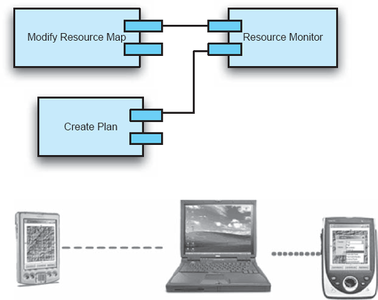
Figura 10-5. Um subconjunto um pouco maior da arquitetura do sistema ERS, composto por três componentes de software e três hosts de hardware.
Este sistema possui vinte e sete possíveis implantações (33). Para cada uma dessas implantações, vamos supor que as três propriedades de QoS tenham sido medidas ou estimadas. Visualizar os vinte e sete pontos de dados em um único diagrama tridimensional seria possível, embora difícil. Note que visualizar cenários de implantação de software com maior número de componentes e hosts, e especialmente com quatro ou mais dimensões de QoS, em um único diagrama seria praticamente impossível. Em vez disso, os arquitetos provavelmente traçariam diagramas bidimensionais separados para estudar as relações entre pares de dimensões QoS. Os três diagramas desse tipo para o cenário das Figuras 10-5 são ilustrados nas Figuras 10-6.
Deve ficar óbvio a partir deste exemplo que, mesmo para um sistema tão pequeno quanto o mostrado na Figura 10-5, calcular manualmente os valores de QoS de implantações individuais e depois determinar a melhor implantação a partir desses valores é inviável. Portanto, uma solução que atenda aos desafios identificados acima e permita aos arquitetos de um sistema de software planejar adequadamente a implantação do sistema precisará (1) fornecer um modelo extensível que suporte a inclusão de parâmetros arbitrários do sistema; (2) suportar a definição de novas dimensões de QoS usando os parâmetros do sistema; (3) permitir que os usuários especifiquem suas preferências de QoS; e (4) fornecer algoritmos eficientes e genéricos que podem ser usados para encontrar uma solução (ou seja, arquitetura de implantação) que maximize a satisfação dos usuários em um tempo razoável.
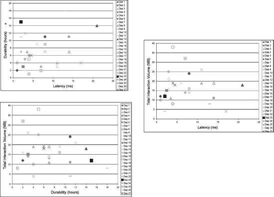
Figura 10-6. Os trade-offs par a par entre os três QoS de interesse (latência, durabilidade e volume de interação) para o subsistema ERS mostrados na Figura 10-5.
Essa solução é passível de implementação, aliviando pelo menos parte da responsabilidade do arquiteto. Isso, por sua vez, permite que arquitetos foquem em tarefas como especificar metas concretas para dimensões de QoS de interesse, em vez de tarefas simples, porém críticas, como determinar se uma dada implantação satisfaz todas as restrições do sistema e, em caso afirmativo, calcular os valores de suas várias dimensões de QoS.
Por exemplo, no caso do cenário das Figuras 10-5 e 10-6, o arquiteto pode estar interessado em uma implantação com limiares específicos de latência, durabilidade e volume de interação. Determinar e analisar manualmente cada implantação individual que é possível, ou seja, que satisfaz todas as restrições do sistema, e escolher uma que de fato atenda aos limites estabelecidos, seria excessivamente demorado (poderia levar horas para esse cenário pequeno e anos mesmo para sistemas apenas um pouco maiores) e propenso a erros. Além disso, o arquiteto provavelmente optará por parar assim que encontrar a primeira implantação que atenda aos critérios desejados. Em contraste, uma solução baseada em software trabalhando no mesmo problema provavelmente seria capaz de determinar um número de implantações válidas que atendam aos critérios de QoS e escolher a melhor.
O suporte automatizado para modelagem e análise de implantação também permitiria que arquitetos estudassem e quantificassem quaisquer mudanças no comportamento de execução de um sistema. Isso, por sua vez, permitiria que eles formulassem planos sobre se e quando reimplantar o sistema ou algumas de suas partes.
Modelagem
Para poder criar e implementar um plano de implantação para um sistema de software distribuído de grande porte, longevura e longevidade, os arquitetos do sistema precisam primeiro criar um modelo detalhado que compreenda todas as preocupações relacionadas à implantação do sistema. Este é um exemplo de várias preocupações relacionadas ao hardware e à infraestrutura de rede do sistema que permeiam o espaço das principais decisões de projeto, ou seja, a arquitetura de software do sistema.
Considere os dois diagramas da Figura 10-7, correspondentes a um subconjunto da aplicação ERS representado na Figura 10-2: O diagrama superior mostra uma visão geral da configuração arquitetônica do sistema ERS, enquanto o diagrama inferior mostra a configuração dos hosts de hardware nos quais o software será implantado. Para simplificar, o diagrama superior não mostra nenhum conector de software. Em vez disso, todos os caminhos de interação entre os componentes são representados simplesmente como linhas. O leitor pode escolher interpretá-las como procedimentos para o propósito da discussão que se segue. As linhas tracejadas no diagrama inferior representam a conectividade da rede.
Um arquiteto de software precisaria de muito mais informações do que as contidas nos dois diagramas das Figuras 10-7 para determinar qual seria uma implantação efetiva dos componentes de software do ERS em seus hosts de hardware. Por exemplo, o arquiteto precisaria saber o quão computacionalmente intensivo é o componente do Advisor de Implantação; o tamanho do Repositório; com que frequência o componente Clock atualiza os componentes restantes do sistema; que tipo de interface gráfica os cinco componentes de interface do sistema exigem; e assim por diante. Além disso, o arquiteto precisaria conhecer muitas das características dos cinco hosts (como suas capacidades, dispositivos periféricos disponíveis, software em nível de sistema rodando em cada um, e assim por diante), bem como os links de rede que os conectam (como largura de banda disponível, protocolo, confiabilidade do link, entre outros). Somente depois que todas essas informações estiverem disponíveis o arquiteto pode tomar decisões apropriadas de implantação.
Portanto, um modelo de implantação eficaz requer os seguintes elementos:
Os arquitetos também podem precisar representar usuários do sistema ou tipos de usuários e suas preferências para tomar decisões apropriadas em situações em que múltiplas opções de implantação são aceitáveis.
Para qualquer sistema de software de tamanho moderado, o modelo acima pode ser muito grande, especialmente se os arquitetos decidirem capturar muitos parâmetros e restrições do sistema como um todo e de seus elementos individuais de hardware e software. Parâmetros de exemplo de um componente de software são os requisitos de CPU e memória para a execução do componente, características do substrato de execução necessário, como a versão necessária da Máquina Virtual Java, e assim por diante. Da mesma forma, para um conector que permite a interação de dois ou mais componentes, o modelo do sistema abrangeria muitos dos mesmos parâmetros do caso dos componentes, mas também capturaria parâmetros como tamanhos e frequências da interação entre os componentes, mecanismos de segurança disponíveis e se o conector assume um perfil de distribuição específico (como espaço de endereço único, interprocesso, ou baseado em rede).
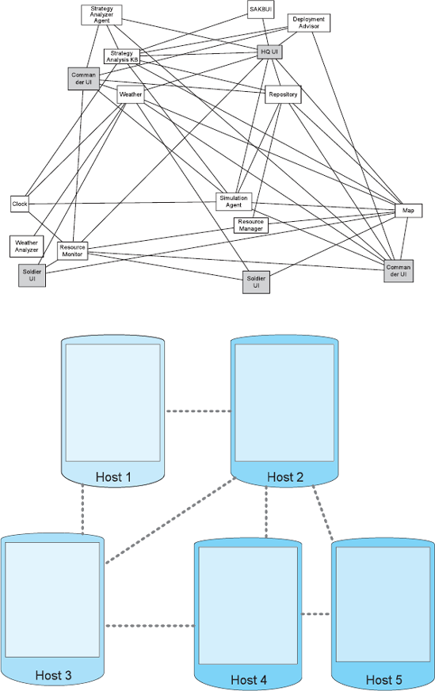
Figura 10-7. A configuração arquitetônica de software de um subconjunto da aplicação ERS (topo) e a configuração de hardware em que o software será implantado (embaixo).
Embora a principal responsabilidade de um arquiteto de software seja focar nos aspectos de software do sistema, no caso da modelagem de implantação os arquitetos de software também devem considerar as características das plataformas de hardware e da rede. Linguagens de descrição de arquitetura extensíveis como xADL, AADL e até UML, discutidas emCapítulo 6, são capazes ou já incorporam tais elementos de modelagem.
Podem existir muitas restrições especificadas nos elementos de software e hardware de um modelo de implantação. Por exemplo, restrições de localização podem especificar a relação entre elementos de software e hardware: exigir, permitir ou proibir que certos elementos sejam implantados em determinados hosts. No exemplo da Figura 10-7, pode ser exigido que o componente Clock resida no Host 2, enquanto o componente Repository pode ser proibido de residir nesse host.
Restrições de colocação especificam grupos de componentes e conectores que precisam ser implantados e redistribuídos como uma coleção, assim como grupos de componentes e conectores que podem não ser implantados no mesmo host. Por exemplo, outra forma de especificar as duas restrições de localização acima para a Figura 10-7 seria acoplar a restrição de localização do componente Clock (que ele deve residir no Host 2) com uma restrição de colocação que indique que os componentes Clock e Repository podem não residir no mesmo host.
Além da localização e colocação, outras restrições podem restringir as versões dos conectores de software que podem ser usadas para permitir as interações de versões específicas dos componentes, as configurações de hardware que são exigidas ou proibidas para implantar um determinado componente, e assim por diante. Um aspecto final e crítico de um modelo de implantação é a quantificação das dimensões de QoS de interesse. Se uma determinada propriedade do sistema não pode ser quantificada, ela não pode ser estimada ou medida com precisão e o impacto sobre essa propriedade da implantação particular de um sistema não pode ser avaliado objetivamente. Assim, por exemplo, tentar determinar uma implantação do ERS que otimize sua usabilidade seria inerentemente difícil: usabilidade é uma noção amplamente subjetiva que depende de muitos fatores, às vezes implícitos e possivelmente incompreendidos.
Felizmente, muitas propriedades importantes do sistema podem ser quantificadas: confiabilidade, disponibilidade, tamanho, taxa de consumo de energia, latência e volume de dados são exemplos. Algumas dessas propriedades podem ter múltiplas interpretações, que variam entre arquitetos, projetos e organizações. No entanto, em princípio, é possível selecionar uma definição específica para uma determinada propriedade. Assim, por exemplo, uma definição possível de disponibilidade para um serviço do sistema (como recurso de agendamento discutido no contexto da Figura 10-3) pode ser como a proporção das solicitações de serviço concluídas com sucesso em relação ao número total de solicitações de serviço tentadas. Não é fundamental que essa seja a única, ou a melhor, definição de disponibilidade. É muito mais importante que a definição se encaixe nas necessidades do projeto em questão e que seja aplicada de forma consistente.
Análise
Desenvolver um modelo detalhado de implantação será uma tarefa considerável e intensiva em humanos para qualquer aplicação grande e distribuída: muitos parâmetros de muitos elementos do sistema terão que ser modelados; muitas restrições terão que ser capturadas; As dimensões de QoS de interesse terão que ser formalmente definidas; os usuários do sistema e suas preferências terão que ser modelados; e assim por diante. Fazer tudo isso só valerá a pena se o modelo for usado de forma eficaz para tomar as decisões necessárias e complexas de implantação. Para isso, o modelo de implantação do sistema terá que ser analisado quanto a propriedades de interesse.
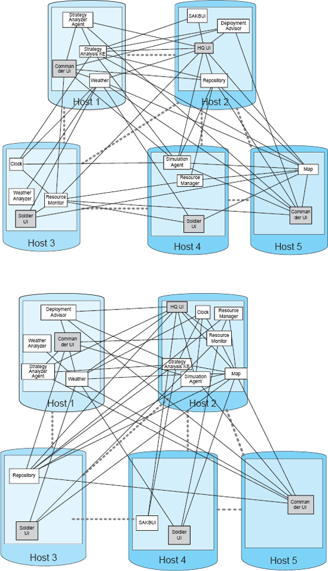
Figura 10-8. Duas possíveis implantações do subconjunto do ERS representado na Figura 10-7.
Considere, como ilustração, os dois diagramas emFigura 10-8. Ambos representam implantações dos elementos de software da aplicação ERS em seus nós de hardware. As conectividades tanto do software quanto das configurações de hardware nos doisFigura 10-8Diagramas são idênticos aos retratados emFigura 10-7. Em outras palavras, as aplicações correspondentes às duas implantações são funcionalmente equivalentes entre si. A única diferença entre os dois diagramas é que alguns elementos de software foram reposicionados entre os hosts. Usando a terminologia introduzida emCapítulo 3, podemos então dizer que os dois diagramas representam diferentes visões de implantação candidatas da arquitetura da aplicação ERS. Um arquiteto que considerar essas duas implantações candidatas terá que tomar certas determinações, conforme detalhado abaixo.
Responder à primeira pergunta — Uma implantação é válida? — é relativamente fácil. Se as restrições do sistema forem especificadas rigorosamente, isso se torna um problema direto de satisfação de restrições.
A resposta para a segunda pergunta — Qual implantação é melhor? — é mais incerta. Para responder a essa pergunta, o arquiteto deve ter uma medida claramente definida de qualidade para a implantação de um sistema. Isso significa que o modelo de implantação do sistema precisará fornecer definições de todas as dimensões de QoS de interesse. Por sua vez, essas dimensões de QoS terão que ser medidas, ou pelo menos estimadas. Se múltiplas dimensões de QoS estiverem em consideração, como será o caso da maioria dos sistemas grandes, o arquiteto provavelmente terá que lidar com situações ótimas de Pareto (lembre-se da Figura 10-4(b): Uma implantação pode se mostrar superior em relação a um subconjunto das dimensões de QoS, enquanto outra implantação pode ser melhor em relação a um subconjunto diferente das dimensões de QoS).
Por essa razão, critérios adicionais terão que ser introduzidos no modelo. Uma possibilidade é classificar as dimensões de QoS. Por exemplo, pode-se decidir que a durabilidade é mais crítica do que a latência. Nesse caso, a terceira implantação da Figura 10-4(b) seria selecionada.
Outra possibilidade, como sugerido anteriormente, é introduzir os usuários do sistema no modelo de implantação e capturar explicitamente suas preferências. Por exemplo, um usuário poderia afirmar que a alta durabilidade do serviço de recursos agendados no sistema ERS é mais importante, por um dado fator quantificado, do que sua baixa latência; outro usuário pode especificar outra preferência, possivelmente conflitante. Isso permitiria que os arquitetos introduzissem a noção de utilidade do sistema e selecionassem a implantação que oferece maior utilidade total para todos os usuários, ou, alternativamente, a implantação que oferece maior utilidade para o(s) usuário(s) mais importantes.
Melhor-Barato-Rápido—Escolha Qualquer Dois!
Um dos axiomas mais frequentemente usados na engenharia de sistemas de software é:
Melhor-mais barato-mais
rápido—escolha qualquer dois!
Isso significa que, para qualquer sistema de software, apenas duas dessas três propriedades podem ser alcançadas ao mesmo tempo. Por exemplo, é possível construir um sistema de alta qualidade (melhor) que entregue sua funcionalidade de forma eficiente (mais rápida), mas isso será um negócio caro (mais barato é sacrificado). Da mesma forma, se quisermos um sistema barato (mais barato) que também seja altamente performante (mais rápido), devemos esperar que a qualidade do sistema (melhor) seja comprometida.
Existem formas alternativas de expressar esse princípio.
Por exemplo:
Funcionalidade-escalabilidade-desempenho — escolha
qualquer dois!
Todas as várias versões desse princípio apontam para as concessões inerentes entre as propriedades em um sistema de software.
Relacionando isso ao problema da implantação, não deveria surpreender um engenheiro de software que todos os usuários do sistema não possam ter todas as suas preferências atendidas em uma implantação de sistema escolhida. Isso será verdade mesmo para aqueles usuários considerados "muito importantes". Grandes sistemas de software distribuídos, como os que estão sendo discutidos aqui, são multifacetados e envolvem muitos trade-offs, como os mencionados acima. Assim, o usuário do sistema não poderá esperar realisticamente que o sistema entregue seus serviços da maneira ideal (para aquele usuário). Na verdade, o melhor que uma pessoa pode esperar ao lidar com o problema de implantação do sistema é que a subotimizidade no QoS entregue pelo sistema seja minimizada.
Outra forma de ver isso é que, ao tomar decisões de implantação, alguns ou até todos os usuários do sistema provavelmente ficarão insatisfeitos com o sistema. Isso decorre diretamente do axioma "melhor-mais barato-mais rápido". O trabalho do arquiteto de software é usar os conceitos apresentados neste capítulo para minimizar essa insatisfação.
Responder à terceira pergunta—Existe uma implantação melhor do que a atual?—pode ser muito desafiador. Pode exigir considerar um número muito grande de opções de implantação e, para cada uma delas, estabelecer a validade da implantação e comparar a nova implantação com a existente. Essa pergunta está intimamente relacionada a uma questão mais geral — Qual é a melhor implantação possível para um determinado sistema? — que é inviável de responder no caso geral devido à natureza exponencial do problema de implantação.
Existe uma classe de algoritmos que pode ser aplicada a questões como essas. Como mencionado acima, o problema de implantação é um exemplo de problemas de otimização multidimensional. Técnicas como programação linear mista inteira (MIP) e programação não linear mista inteira (MINLP) são frequentemente usadas para resolver tais problemas (Nemhauser e Wolsey 1988). A principal limitação do MIP é que ele busca exaustivamente a melhor solução para um problema e, portanto, é inaplicável mesmo a cenários de implantação moderadamente grandes. Os algoritmos MINLP, por sua vez, fornecem soluções aproximadas, em vez de ótimas. Além disso, algoritmos MINLP podem nem sempre convergir para uma solução.
Existem outras estratégias baseadas em heurísticas que podem ser aplicadas para resolver problemas complexos como este, incluindo estratégias gananciosas, genéticas e descentralizadas (Malek et al. 2007). No entanto, nenhuma dessas estratégias pode garantir que a implantação sugerida seja a ideal. No caso da formulação mais simples da terceira pergunta—Existe uma implantação melhor do que a atual?—isso pode resultar em não identificar uma implantação melhor, mesmo que muitas dessas implantações possam existir. No caso da formulação mais geral da pergunta — Qual é a melhor implantação possível para um determinado sistema? — isso pode resultar na seleção de uma implantação que na verdade é subótima, mas é a melhor implantação que o algoritmo escolhido pode encontrar.
Implementação
Uma vez que o problema de implantação tenha sido modelado e a implantação de um sistema de software específico sugerida da forma descrita acima, essa implantação precisa ser efetuada. Como observado por Richard Hall e colegas (Hall et al. 1997; Hall, Heimbigner e Wolf 1999) e Carzaniga e colegas (Carzaniga et al. 1998), algumas das atividades no processo de implantação de um sistema de software ocorrem no host que é a fonte do componente implantado, enquanto outras atividades ocorrem no host que é o destino do componente implantado. Hosts de origem também são chamados de produtores, enquanto hosts de destino são chamados de alvos, ou consumidores. A relação geral entre essas atividades é mostrada na Figura 10-9. Discutiremos brevemente cada uma dessas atividades abaixo, com foco especial no papel da arquitetura de software no processo de implantação.
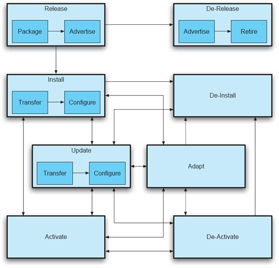
Figura 10-9. Processo de implantação de software: atividades de implantação e seus relacionamentos. O diagrama foi adotado de (Carzaniga et al. 1998).
Soltar. A liberação de um sistema de software é a atividade inicial no processo de implantação desse sistema. Ele ocorre no local do produtor, ou locais, após a conclusão do desenvolvimento do sistema. O sistema é embalado para que possa ser transferido para os sites dos consumidores. Em certos ambientes (como computação desktop), o sistema pode precisar ser anunciado para potenciais consumidores. O sistema embalado normalmente conterá o seguinte:
Instalar. Uma vez que o sistema tenha sido embalado nos locais produtores e transferido para os locais dos consumidores, ele está pronto para ser configurado e instalado para operação. A instalação é uma atividade complexa que abrange todas as etapas necessárias para permitir a execução do sistema. Em outras palavras, a instalação trata de:
Ativar. Uma vez instalado o sistema, ele precisa ser ativado para uso nos hosts alvo. A ativação consiste em fornecer um comando, ou sequência de comandos, que será necessário para iniciar o sistema.
Desativar. A desativação envolve desativar e/ou desligar um sistema, ou qualquer uma das instalações do sistema que ainda estejam ativas nos hosts alvo.
Atualização. Uma vez que um sistema é instalado e ativado nos hosts alvo, com o tempo ele pode precisar ser atualizado por diferentes motivos. As atualizações são iniciadas pelos produtores do sistema e envolvem as mesmas atividades da instalação original do sistema, com a ressalva de que apenas o subconjunto necessário do sistema é empacotado e recebido dos produtores hosts. O sistema pode precisar ser desativado antes de ser atualizado e, posteriormente, reativado. Alternativamente, o sistema pode suportar reimplantação dinâmica (lembre-se da discussão acima e veja tambémCapítulo 14). É fundamental que a atualização do sistema de software seja devidamente refletida em seus modelos arquitetônicos. Se isso não for garantido, a arquitetura irá se degradar, e quaisquer atualizações subsequentes podem resultar em defeitos no sistema.
Adaptar. A adaptação abrange uma ampla gama de atividades que resultam em mudanças no sistema, possivelmente de forma dinâmica, em resposta a eventos no ambiente de execução do sistema. A adaptação é um aspecto importante do desenvolvimento de software baseado em arquitetura, portantoCapítulo 14é dedicado a ele. Com relação à implantação de software, a adaptação pode resultar na reimplantação do sistema (ou seja, no reposicionamento de seus componentes de software entre processos de execução e/ou hosts de hardware). A adaptação será discutida mais a seguir, no contexto da mobilidade.
Desinstale. Se o sistema não for mais necessário nos sites de consumidores, ele precisará ser removido. Uma visão simples da desinstalação de um sistema é que ele simplesmente reverte as etapas tomadas durante a instalação. No entanto, quaisquer atualizações e adaptações subsequentes também devem ser levadas em conta, assim como quaisquer dependências que outros sistemas do host consumidor específico tenham em relação à remoção do sistema. Por isso, é fundamental manter os modelos arquitetônicos atuais para todos os sistemas de software implantados. Também deve ser observado que, antes da desinstalação do sistema, pode ser necessário desativá-lo primeiro.
Liberar o Liberador. Após algum tempo, o produtor de um determinado sistema pode decidir não dar mais suporte ao sistema. Em outras palavras, o produtor pode decidir aposentar o sistema. Isso pode ocorrer porque uma ou mais versões subsequentes do sistema são superiores, o tamanho do mercado do produto é muito pequeno, o produtor descontinuou o produto ou o produtor encerrou suas atividades. A retirada do apoio do produtor ao sistema geralmente é anunciada. Os consumidores do sistema podem então decidir se ainda querem usar o sistema, com os riscos associados, ou desinstalá-lo.
Suporte à Ferramenta
Para apoiar adequadamente as atividades de modelagem, análise e implementação baseadas em arquitetura de software discutidas acima, os engenheiros devem contar com ferramentas de software apropriadas. Algumas dessas ferramentas, como as de instalação de software, são amplamente utilizadas. Por exemplo, quase todo software de desktop vem com um assistente de instalação. Ferramentas para outras atividades não são tão comuns e, além disso, frequentemente deixam de considerar a arquitetura de software do sistema. Isso envolve o risco de que preocupações arquitetônicas importantes sejam negligenciadas durante a implantação e a reimplantação. Também envolve o risco de que decisões importantes de design arquitetônico sejam violadas. Idealmente, um conjunto de ferramentas de implantação permitirá que arquitetos façam o seguinte.
Existem ferramentas que suportam muitos aspectos das atividades acima [como Software Dock (Hall, Heimbigner e Wolf 1999)], mas frequentemente adotam uma visão centrada na implementação, em vez da arquitetura de software, do sistema implantado. Aqui, vamos focar brevemente em alguns exemplos de ferramentas de implantação baseadas em arquitetura.
Um exemplo de conjunto de ferramentas integrado que permite que várias dessas atividades ocorram de forma fluida para a família de aplicações ERS é mostrado na Figura 10-10. O ambiente permite que um arquiteto modele graficamente certos aspectos da implantação de um sistema, incluindo os seguintes.
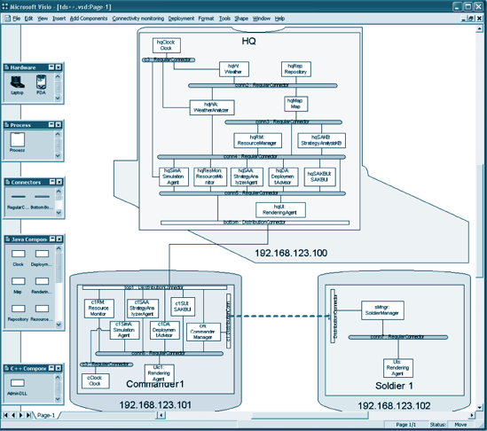
Figura 10-10. Um exemplo de ambiente de implantação de software baseado em arquitetura. Uma aplicação é modelada como um conjunto de componentes e conectores de software, bem como hosts de hardware e links de rede. O link de rede entre os dois hosts inferiores está temporariamente fora do ar (indicado pela linha tracejada).
Uma vez concluído o modelo da implantação de uma aplicação, essa ferramenta é capaz de liberar e instalar a aplicação, além de monitorá-la durante a execução. Por exemplo, a captura de tela na Figura 10-10 mostra que o link de rede entre os dois PDAs está fora do ar.
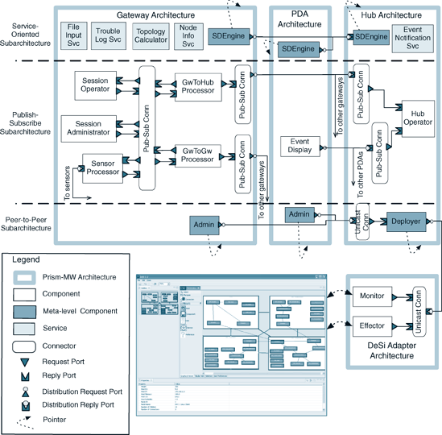
Figuras 10-11. Uma visão de implantação de um sistema de software distribuído em três tipos de dispositivos (topo). Uma ferramenta de modelagem e análise de implantação interage com o sistema em tempo de execução para garantir a preservação de suas propriedades principais (base).
Uma ferramenta de implantação de sistemas distribuídos mais sofisticada, chamada DeSi (Malek et al. 2005), é representada na parte inferior da Figura 10-11. O DeSi permite que um arquiteto forneça um modelo mais extenso da implantação do sistema, como o discutido anteriormente neste capítulo. A ferramenta também é capaz de analisar o modelo e sugerir uma implantação eficaz para um determinado sistema, o que garantirá as principais dimensões de QoS do sistema. Um exemplo de implantação para uma aplicação é mostrado na parte superior da Figura 10-11. Leitores interessados podem consultar (Malek et al. 2007) para mais detalhes sobre essa aplicação em particular. Por fim, a ferramenta é capaz de interagir com a plataforma de implementação do sistema, observar e analisar quaisquer mudanças nas condições operacionais do sistema. Em resposta, o DeSi reavalia a visão de implantação da arquitetura atual do sistema e pode sugerir e efetuar uma melhorada.
ARQUITETURA DE SOFTWARE E MOBILIDADE
Uma vez que um sistema de software está em operação, partes dele podem precisar ser reimplantadas ou migradas em resposta a mudanças no ambiente de execução ou à necessidade de melhorar certas propriedades não funcionais do sistema. A redistribuição dos componentes de um sistema de software é um tipo de mobilidade do sistema de software.
A mobilidade é uma área que recebeu atenção significativa recentemente. Este capítulo foca especificamente nos aspectos da mobilidade que são relevantes para a arquitetura de um sistema de software. O leitor deve observar que, para que a mobilidade de software seja possível, certas facilidades de implementação de sistemas de baixo nível, como bibliotecas dinamicamente ligadas e carregamento dinâmico de classes, geralmente também devem estar disponíveis. Não vamos focar nessas instalações aqui, pois elas estão fora do escopo deste livro.
Conceitos Básicos
A computação móvel envolve o deslocamento de usuários humanos junto com seus anfitriões entre diferentes locais físicos, ainda podendo acessar um sistema de informação sem impedimentos. Isso também é chamado de mobilidade física. Essa computação móvel não necessariamente envolve a mobilidade de sistemas de software, ou partes deles, de um host para outro. Se um software se move entre hosts de hardware durante a execução do sistema, essa ação é chamada de mobilidade de código, ou mobilidade lógica.
Se um módulo de software que precisa ser migrado contém o estado em tempo de execução, então a migração do módulo é conhecida comoMobilidade com estado. Se apenas o código precisar ser migrado, isso é conhecido comoMobilidade apátrida. Claramente, suportar mobilidade com estado é mais desafiador, já que o estado do componente móvel no host de origem precisa ser capturado, migrado e reconstituído no host de destino. Além disso, o componente pode ser movido apenas em certos momentos [como quando não está operando em seu estado interno; ou seja, quando está em repouso (Kramer e Magee 1988), como discutido emCapítulo 14]. Por fim, o efeito da migração do componente, e portanto seu tempo de inatividade temporário, sobre o restante do sistema e sua dependência do estado interno do componente deve ser considerado. É por isso que Alfonso Fuggetta, Gian Petro Picco e Giovanni Vigna (Fuggetta, Picco e Vigna 1998) se referem à mobilidade com estado comofortemobilidade, enquanto consideram mobilidade apátrida comofracomobilidade.
Paradigmas de Mobilidade
É amplamente aceito que existem três classes gerais de sistemas de código móvel: avaliação remota, código sob demanda e agente móvel (Fuggetta, Picco e Vigna 1998). Esses são tipicamente distinguidos de paradigmas de código "fixos", como cliente-servidor. Em um sistema cliente-servidor, o servidor possui tanto a lógica quanto os recursos necessários para fornecer um determinado serviço, enquanto a distribuição desse know-how e recursos varia entre os paradigmas de código móvel.
Avaliação Remota
Na avaliação remota, um componente no host de origem possui o know-how, mas não os recursos necessários para executar um serviço. O componente é transferido para o host de destino, onde é executado usando os recursos disponíveis. O resultado da execução é retornado ao host de origem.
Na terminologia usada anteriormente neste capítulo (isto é, sob a perspectiva da arquitetura de software), isso significa que, na avaliação remota, um componente de software é:
Código sob demanda
No código sob demanda, os recursos necessários estão disponíveis localmente, mas o know-how não. O subsistema local solicita o(s) componente(s) que fornecem o know-how do(s) host(s) remoto(s) apropriado(s).
Do ponto de vista da arquitetura de software, o código sob demanda exige os mesmos passos que a avaliação remota; A única diferença é que os papéis dos hosts alvo e destino são invertidos.
Agente Móvel
Se um componente em um determinado host (1) tem o know-how para fornecer algum serviço, (2) possui algum estado de execução e (3) tem acesso a alguns, embora não todos, os recursos necessários para fornecer esse serviço, o componente, junto com seus recursos de estado e locais, pode migrar para o host de destino, que pode ter os recursos restantes necessários para fornecer o serviço. O componente, junto com seu estado, será instalado no host de destino e acessará todos os recursos necessários para fornecer o serviço.
Como mencionado acima, do ponto de vista da arquitetura de software, agentes móveis são componentes de software com estado. Portanto, antes que as etapas descritas acima sejam tomadas, um agente móvel deve primeiro ser desativado com segurança e possivelmente desinstalado do host de origem. Isso pode apresentar certos desafios.
Desafios na migração de código
A mobilidade do software em tempo de execução depende de vários fatores que não são de natureza arquitetônica. Por exemplo, a plataforma de tempo de execução deve ser capaz de suportar carregamento dinâmico e vinculação de módulos de código. Da mesma forma, tanto o host de origem quanto o de destino devem fornecer todas as utilidades de software e hardware necessárias para executar o código.
Ao mesmo tempo, há preocupações arquitetônicas das quais os engenheiros devem estar cientes. Uma dessas preocupações é a quietude. Pode ser inseguro tentar migrar um componente de software no meio do processamento, enquanto ele está esperando um resultado de outro componente, ou enquanto outros componentes solicitam seus serviços. Portanto, o sistema deve fornecer instalações que permitam a suspensão temporária de todas as interações originadas ou direcionadas ao componente em questão, até que o componente seja realocado para um novo hospedeiro.
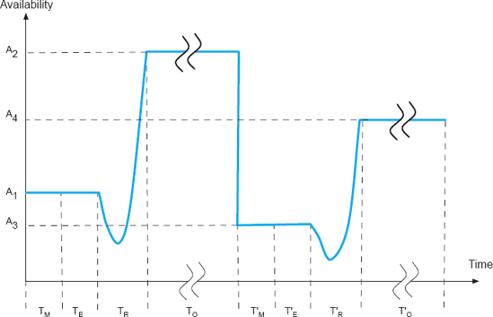
Figuras 10-12. A mobilidade dos componentes de software impactará negativamente a qualidade de serviço (QoS) do sistema: Certos serviços ficarão indisponíveis durante o processo de migração, diminuindo temporariamente (mas possivelmente significativamente) o QoS entregue.
Em geral, a quietude requer pelo menos duas capacidades. O primeiro deve estar incorporado no próprio componente, permitindo que o sistema instrua o componente a cessar qualquer processamento autônomo e posteriormente reiniciá-lo. A segunda capacidade pode exigir que elementos de propósito especial, como conectores adaptadores, sejam inseridos temporariamente no sistema, para isolar o componente de solicitações externas. Esses módulos também podem registrar as solicitações recebidas e encaminhá-las para processamento após a migração do componente.
Outra questão importante diz respeito à qualidade de serviço oferecida pelo sistema como resultado da mobilidade do código. Considere o exemplo das Figuras 10-12. O sistema postulado oferece um determinado nível de disponibilidade para seus serviços. O sistema é monitorado por um tempo, T M, e está estabelecido que a disponibilidade fornecida é A 1. Se os stakeholders do sistema quiserem melhorar a disponibilidade do sistema para um nível A 2 mais alto, por exemplo, migrando um ou mais de seus componentes para diferentes hosts, eles primeiro avaliarão, durante o tempo T E, onde esses componentes devem residir. Essa avaliação pode ser realizada utilizando uma capacidade de análise de implantação, como as discutidas anteriormente neste capítulo. Uma vez determinados os hosts-alvo, os componentes móveis são tornados inativos, empacotados para reimplantação e migrados para seus hosts-alvo. Uma vez instalados nos hospedeiros alvo e ativados, o sistema realmente opera no nível de disponibilidade A 2 durante o próximo período T 0.
O sistema operará nesse nível de disponibilidade até que alguma mudança ocorra no próprio sistema — como uma falha de software ou hardware — ou no ambiente físico — como o surgimento de obstáculos. Tais mudanças podem fazer com que o nível de disponibilidade diminua para algum nível, A 3, como mostrado na parte direita da Figura 10-12. O processo acima precisará ser repetido para melhorar novamente a disponibilidade do sistema até um nível aceitável, A 4. Esse padrão pode ocorrer muitas vezes durante a execução de um sistema móvel.
Mas e quanto ao período de tempoTRnecessário para efetuar a redistribuição? Como um ou mais componentes do sistema estavam inacessíveis, a qualidade do serviço do sistema pode ter caído significativamente. Na verdade, é possível que a queda na disponibilidade, mesmo que temporária, seja inaceitável para os usuários do sistema. Nesse caso, migrar os componentes em questão não será a melhor abordagem, e outras técnicas de adaptação dinâmica (como replicação de componentes com sincronização contínua de estados) podem precisar ser consideradas. A adaptabilidade dinâmica das arquiteturas de sistemas de software é tratada emCapítulo 14.
ASSUNTO FINAL
A implantação e mobilidade de sistemas são necessidades críticas nos sistemas de software distribuídos, descentralizados, abrangentes e embarcados de longa duração de hoje. Arquiteturas de vários desses sistemas serão apresentadas e discutidas emCapítulo 11, e será revisitado no contexto da mudança arquitetônica e adaptação emCapítulo 14. A natureza desses sistemas exige que as suposições e técnicas do passado, empregadas especialmente no domínio da computação de mesa, sejam reavaliadas. A complexidade desses sistemas também exige que a implantação e a mobilidade sejam consideradas sob a perspectiva da arquitetura de software. Embora muitos aspectos tanto da implantação quanto da mobilidade dependam da implementação e de questões de sistema de baixo nível, elas são significativamente impactadas — e impactam significativamente — a arquitetura de software de um determinado sistema. Este capítulo identificou várias preocupações pertinentes e sugeriu estratégias para enfrentá-las.
A perspectiva sobre arquitetura de software que adotamos neste livro — que ela é um conjunto de decisões principais de design sobre um sistema de software — permite direta e naturalmente que um arquiteto abrace a implantação e a mobilidade e exerça controle sobre seus aspectos relevantes. A modelagem e análise da implantação e mobilidade no nível arquitetônico ajudam a garantir a funcionalidade adequada do sistema e os atributos de qualidade desejados. Além disso, manter a relação entre o modelo arquitetônico do sistema e sua implementação permite que o monitoramento do sistema seja reificado em decisões arquitetônicas de (re)implantação e mobilidade, que são então efetuadas no sistema em execução. Ao ampliar a noção de arquitetura de software para abranger uma área tradicionalmente considerada fora de seu escopo, os arquitetos de software podem obter uma vantagem adicional significativa para conter a degradação arquitetônica.
Além das preocupações focadas na arquitetura discutidas neste capítulo, muitas questões não arquitetônicas também são pertinentes à implantação e à mobilidade. "Leitura Complementar" fornece indicações para algumas das literaturas relevantes.
O Caso de Negócios
Dinamismo na forma de implantação e mobilidade é um fato da vida nos sistemas modernos. É impraticável, muitas vezes inaceitável, que muitos dos sistemas atuais tenham configurações estáticas ou sejam desmontados para atualizações. Além disso, implantar um sistema de forma que garanta suas propriedades principais e satisfaça todas as restrições impostas a ele é uma tarefa difícil, talvez até impossível, para um engenheiro humano. Modelar e analisar as preocupações apropriadas no nível arquitetônico oferece pelo menos alguma vantagem adicional e pode ajudar a responder muitas perguntas antes que recursos significativos sejam investidos no suporte às instalações necessárias de implantação e mobilidade em baixa altitude.
Ao mesmo tempo, apoiar a implantação e mobilidade no nível da arquitetura exige muita preparação cuidadosa, como foi indicado neste capítulo no caso da modelagem de implantação. Também exige manter um olhar atento à arquitetura. Ainda mais perigoso e caro do que mergulhar em detalhes de baixo nível imediatamente seria a degradação da arquitetura. A observação repetida ao longo deste livro também se aplica neste caso: os benefícios, monetários e de outra natureza, de uma filosofia de desenvolvimento de software baseada em arquitetura só podem ser colhidos se a arquitetura permanecer a peça central de todas as atividades de desenvolvimento, incluindo as atividades de implantação e pós-implantação.
PERGUNTAS DE REVISÃO
EXERCÍCIOS
1. uma implantação específica para o sistema de software
2. a definição de disponibilidade do sistema como a razão entre interações tentadas entre componentes e interações concluídas
3. a confiabilidade de cada link de rede como a porcentagem de tempo em que o link está ativo
4. a largura de banda de cada link
5. A frequência das interações entre os componentes
6. o tamanho dos dados trocados em cada interação, a memória disponível em cada dispositivo de hardware
7. a memória necessária para cada componente
Elabore um algoritmo que encontre a implantação do sistema que maximize a disponibilidade do sistema. Discuta a complexidade computacional do seu algoritmo. Sugira melhorias que possam diminuir a complexidade do algoritmo. Discuta os trade-offs que você precisa considerar para conseguir esses aprimoramentos. Você pode supor que existe uma visão central da arquitetura de implantação do sistema.
1. Cada robô pode ser conectado no máximo a outros robôs M-2.
2. Cada robô pode "ver" apenas aqueles robôs aos quais está diretamente conectado.
Crie um algoritmo descentralizado no qual cada robô decide autonomamente a migração de seus componentes locais para melhorar a disponibilidade geral do sistema. Você pode não assumir que algum robô será capaz de obter uma visão global do sistema. Cada robô pode adquirir as informações locais relevantes de implantação de robôs aos quais está diretamente conectado.
LEITURA ADICIONAL
O problema geral da implantação de software tem sido amplamente estudado. No entanto, um número comparativamente menor de técnicas existentes tentou abordar a implantação sob uma perspectiva baseada na arquitetura de software. O trabalho relacionado mais relevante é analisado aqui. Na área de modelagem de implantação, a Unified Modeling Language (UML) fornece diagramas de implantação, que permitem uma representação visual estática da implantação de um sistema. SysML (SysML Partners 2005) é um padrão de linguagem de modelagem para especificar artefatos de engenharia de sistemas. Os diagramas de alocação do SysML permitem que elementos de modelagem arbitrários se referenciam uns aos outros (por exemplo, alocação de elementos comportamentais a elementos estruturais, ou elementos de software a elementos de hardware). Nem UML nem SysML fornecem feedback aos engenheiros enquanto criam ou visualizam modelos de implantação (possivelmente inadequados) de um sistema. Algumas abordagens promissoras na modelagem de arquitetura de implantação foram construídas com base em pesquisas anteriores em linguagens de descrição de arquitetura. Dois exemplos notáveis de ADLs capazes de modelar uma visualização de implantação da arquitetura de um sistema são xADL (Dashofy 2003; Dashofy, van der Hoek e Taylor 2005) e AADL (Feiler, Lewis e Vestal 2003). De fato, a ferramenta de modelagem e análise de implantação DeSi discutida neste capítulo é construída em torno do xADL como seu núcleo de modelagem de arquitetura.
Várias técnicas existentes tentaram analisar o impacto da arquitetura de implantação de um sistema na qualidade de serviço oferecida. Um deles (Bastarrica, Shvartsman e Demurjian 1998) propõe o uso da programação binária inteira (BIP) para gerar uma implantação ótima de uma aplicação de software sobre uma determinada rede, de modo que a comunicação remota geral seja minimizada. Resolver o modelo BIP é exponencialmente complexo em número de componentes de software, tornando-o aplicável apenas a sistemas pequenos. Coign (Hunt e Scott 1999) fornece uma estrutura para o particionamento distribuído de aplicações COM na rede de forma a minimizar o tempo de comunicação. O Coign trata apenas de cenários envolvendo aplicações cliente-servidor com dois hosts. Problema de posicionamento de componentes (CPP) (Kichkaylo, Ivan e Karamcheti 2003) é um modelo para descrever um sistema distribuído em termos de propriedades e restrições de rede e aplicação. Essa técnica busca apenas uma única implantação válida que satisfaça as restrições especificadas.
Existe uma grande variedade de tecnologias para apoiar diversos aspectos do processo de implantação. Carzaniga et al. (Carzaniga et al. 1998) fornecem uma comparação extensa das técnicas existentes de implantação de software. Eles identificam três classes de tecnologias de implantação de software: instaladores, gerenciadores de pacotes e sistemas de gerenciamento de aplicações. Exemplos amplamente utilizados de instaladores são o Microsoft Windows Installer e o InstallShield (InstallShield Corporation 2000). Exemplos de gerenciadores de pacotes são o RPM do Linux RedHat e os comandos pkg do SUN Solaris. Por fim, exemplos de sistemas de gerenciamento de aplicações são o IBM Tivoli Composite Application Manager e o OpenView da Hewlett Packard. Um sistema de gerenciamento de aplicações deve fornecer monitoramento ativo do sistema (tanto de hardware quanto de software) e várias atividades de implantação que possam precisar ser realizadas como resultado.
Antes de ser possível avaliar e melhorar a arquitetura de implantação de um sistema, pode ser necessário estudar e compreender as propriedades de um sistema implantado. Normalmente, isso é realizado por meio do monitoramento do sistema. Diversas técnicas têm se concentrado no problema do monitoramento remoto de um sistema distribuído. Eles pertencem a duas categorias: (1) técnicas que monitoram uma aplicação na granularidade de construções arquitetônicas de software (como componentes, conectores, suas interfaces); e (2) técnicas que monitoram uma aplicação na granularidade das construções arquitetônicas do sistema (como aplicações de software, hosts de hardware, links de rede). Exemplos proeminentes da primeira categoria são MonDe (Cook e Orso 2005), GAMMA (Orso et al. 2002) e COMPAS (Mos e Murphy 2004), enquanto alguns exemplos proeminentes da segunda categoria são JAMM (Tierney 2000) e Remos (Dinda et al. 2001).
Reimplantação — em outras palavras, mobilidade — é um processo de instalar, atualizar e/ou realocar um sistema de software distribuído. Em um sistema baseado em arquitetura de software, essas atividades se enquadram na categoria maior de reconfiguração dinâmica, que abrange mudanças em tempo de execução na arquitetura de um sistema de software por meio da adição e remoção de componentes, conectores ou suas interconexões. Oreizy et al. (Oreizy 1998; Oreizy, Medvidović e Taylor 1998; Oreizy et al. 1999) descrevem vários aspectos da reconfiguração dinâmica, que determinam o grau em que a mudança pode ser ponderada, especificada, implementada e governada. Este trabalho é discutido mais detalhadamente emCapítulo 14. Garlan et al. (Garlan, Cheng e Schmerl 2003) propõem um framework de adaptação baseado em arquitetura de uso geral, que monitora o sistema e aproveita as ADLs para adaptar e alcançar conformidade arquitetônica. No entanto, essa abordagem modela os aspectos arquitetônicos de software de um sistema, mas não os das plataformas de hardware. Haas et al. (Haas, Droz e Stiller 2003) fornecem uma estrutura para a implantação de serviços autônomos em redes. Os autores dessa técnica consideram a escalabilidade de seus algoritmos autônomos, que dividem a rede em partições e realizam uma implantação hierárquica de serviços de rede. No entanto, a abordagem deles não é aplicável à implantação em nível de aplicação. Por fim, Software Dock (Hall, Heimbigner e Wolf 1999) é um sistema de componentes distribuídos, cooperantes e pouco acoplados. Ele apoia produtores de software fornecendo um Release Dock e um Field Dock. O Release Dock atua como um repositório de lançamentos de sistemas de software. O Field Dock suporta um consumidor de software fornecendo uma interface para os recursos, configuração e sistemas de software implantados do consumidor. O Software Dock emprega agentes que viajam de um Release Dock para um Field Dock para realizar tarefas específicas de implantação de software.
[12] Essa expressão às vezes é usada por proprietários e usuários de PCs com Windows para indicar que o disco rígido deve ser formatado, e o sistema operacional, drivers de dispositivos e programas de aplicação reinstalados do zero. Usuários de Unix e Macintosh normalmente não estão familiarizados com esse tipo de comportamento.